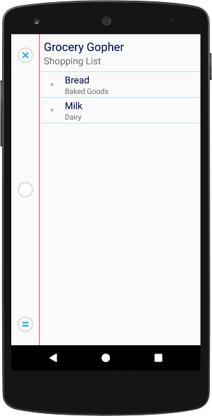

Shopping
List
Grocery Gopher opens to your shopping list. Groceries are
listed in order, by department. You can customize which
departments appear before or after other departments in the
settings menu to better match the department layout of your
particular store.
Groceries added to your shopping list from the pantry are removed
from your shopping list by swiping each item to the right.
Swiping the item to the right will update that item's average
pantry shelf life. Swiping an item left will also remove an
item from your shopping list however, shelf life will not be
updated. Shelf life is indicated by colored dots:
The red dot
next to the "Bread" item in the example view suggests that you are
completely out of bread in your pantry.
A yellow dot
such as that next to "Milk" in the example would indicate that you
have a two to three day supply of milk remaining in your pantry.
Included in this view are two buttons:
The "x" button
switches you from your shopping list to your pantry view and
vice-versa.
Pressing
the "=" button will save a copy of your entire grocery list to the
cloud allowing your list to be shared across devices. For
example, one person can make out a shopping list and save it to
the cloud by pressing the "=" button while another person at the
store can retrieve the shopping list simply by pressing the "="
button on their phone. The grocery lists will be
synchronized. Sharing is accomplished through use of Google
Drive and because of drive limitations, the "=" button will be
disabled for one (1) minute after synchronization. In
addition, there is the possibility of data loss if more then one
device attempts synchronization at exactly the same time.